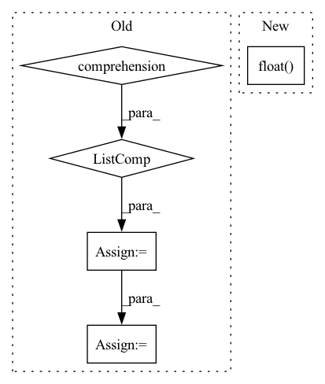

Pattern ID :17930
Before Change
encodings_dict = self.tokenizer(" ".join(token_list))
text_idx.append(encodings_dict["input_ids"])
attn_mask.append(encodings_dict["attention_mask"])
max_length = max([len(idx) for idx in text_idx] )
text_idx = [idx + [self.padding_token_idx] * (max_length - len(idx)) for idx in text_idx]
attn_mask = [mask + [0] * (max_length - len(mask)) for mask in attn_mask]
text_idx = torch.LongTensor(text_idx).to(self.device)
attn_mask = torch.LongTensor(attn_mask).to(self.device)After Change
loss = self.loss(token_logits.view(-1, token_logits.size(-1)), decoder_labels.view(-1))
loss = loss.reshape_as(target_text)
length = (decoder_labels != self.padding_token_idx).sum(dim=1).float()
loss = loss.sum(dim=1) / length
return loss.mean()
def calculate_nll_test(self, corpus, epoch_idx=-1):In pattern: SUPERPATTERN
Frequency: 4
Non-data size: 5
Instances Fragment ID: 58819442
Project Name: rucaibox/textbox
Commit Name: 9c7994602989cced6709bf6ec43a092f69a1d6cd
Time: 2020-12-08
Author: lijunyi@ruc.edu.cn
File Name: textbox/model/LM/gpt2.py
M Class Name: GPT2
N Class Name: GPT2
M Method Name: calculate_loss(3)
N Method Name: calculate_loss(3)
M Parent Class: UnconditionalGenerator
N Parent Class: UnconditionalGenerator
M File Name: textbox/model/LM/gpt2.py
N File Name: textbox/model/LM/gpt2.py
M Start Line: 67
M End Line: 91
N Start Line: 72
N End Line: 95
Before Change
if self.args.semiF_path:
mol_graph, semiF_features = mol_graph
if self.args.semiF_only:
semiF_features = np.stack([features.todense() for features in semiF_features] )
semiF_features = torch.from_numpy(semiF_features).float().cuda()
return semiF_features
f_atoms, f_bonds, a2b, b2a, b2revb, a_scope, b_scope = mol_graph.get_components()After Change
mol_graph, features_batch = mol_graph
if self.args.features_only:
features_batch = torch.from_numpy(np.stack(features_batch)).float()
if self.args.cuda: // can"t use next(self.parameters()).is_cuda b/c no parameters
features_batch = features_batch.cuda()
Fragment ID: 58819433
Project Name: aamini/chemprop
Commit Name: b458b250cc81267ae851a68cc6917be18204ee9d
Time: 2018-10-28
Author: swansonk.14@gmail.com
File Name: mpn.py
M Class Name: MPNEncoder
N Class Name: MPNEncoder
M Method Name: forward(3)
N Method Name: forward(3)
M Parent Class: nn.Module
N Parent Class: nn.Module
M File Name: mpn.py
N File Name: mpn.py
M Start Line: 122
M End Line: 315
N Start Line: 124
N End Line: 324
Before Change
result = torch.as_tensor(result)
result = result.clone().detach()
// print(result.shape)
y = torch.Tensor([query(x) for x in result] )
y = y.long()
return result, y
After Change
victim_input_targets,
)
// print(X.shape)
result = torch.from_numpy(attack.generate(X)).detach().clone().float()
// result = torch.as_tensor(result)
// result = result.clone().detach()
// import pdb; pdb.set_trace() Fragment ID: 58819449
Project Name: trailofbits/privacyraven
Commit Name: d091e8a977269b1fe5d8f8eccfc2db1411ecb923
Time: 2020-11-30
Author: suhashussain1@gmail.com
File Name: src/privacyraven/extraction/synthesis.py
M Class Name: AnonimousClass
N Class Name: AnonimousClass
M Method Name: hopskipjump(6)
N Method Name: hopskipjump(6)
M Parent Class:
N Parent Class:
M File Name: src/privacyraven/extraction/synthesis.py
N File Name: src/privacyraven/extraction/synthesis.py
M Start Line: 195
M End Line: 200
N Start Line: 157
N End Line: 170
Before Change
idx = self._get_src_permutation_idx(indices)
target_classes_o = torch.cat([t["labels"][J] for t, (_, J) in zip(targets, indices)] )
target_classes = torch.full(src_logits.shape[:2], 0,
dtype=torch.int64, device=src_logits.device)
target_classes[idx] = target_classes_o
loss_ce = F.cross_entropy(src_logits.transpose(1, 2), target_classes, self.cls_weights.to(device=src_logits.device))
return loss_ce
After Change
def loss_class(self, outputs, matches, soft_labels):
assert "pred_logits" in outputs
cls_preds = outputs["pred_logits"].flatten()
cls_labels = matches.flatten().float()
// Remove non existent classes
valid_ids = (soft_labels.flatten() != -1).nonzero()
Fragment ID: 58819436
Project Name: bwittmann/transoar
Commit Name: 50cc4661dc99397fe437a829cff6659bfd58eaba
Time: 2022-04-19
Author: bastian.wittmann@tum.de
File Name: transoar/models/criterion.py
M Class Name: TransoarCriterion
N Class Name: TransoarCriterion
M Method Name: loss_class(4)
N Method Name: loss_class(4)
M Parent Class: nn.Module
N Parent Class: nn.Module
M File Name: transoar/models/criterion.py
N File Name: transoar/models/criterion.py
M Start Line: 45
M End Line: 54
N Start Line: 42
N End Line: 48